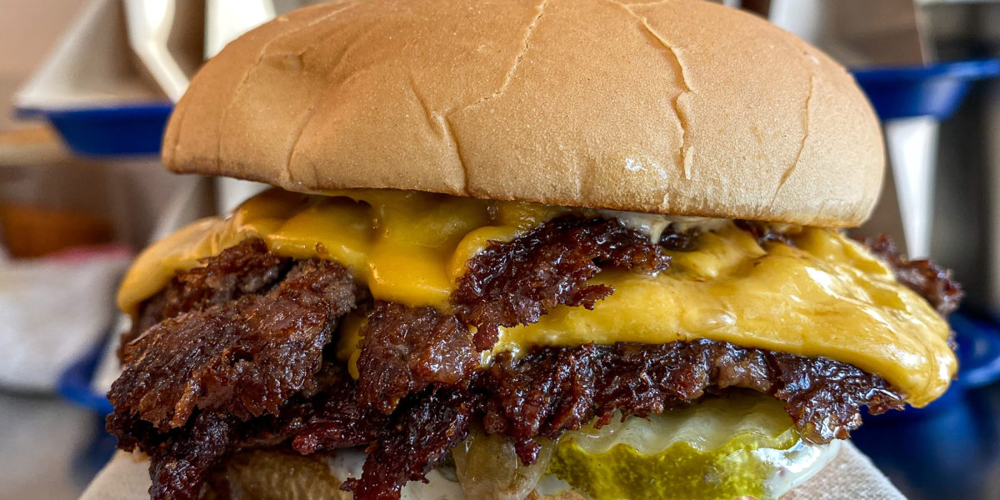

Hamburger Recipe

Description:
I’m going to make a bold statement: this is simply the best burger you will ever make or eat at home.
Ingredients:
- Ground Beef - I used 85% lean
- Burger Buns - toasted
- Pickles - thinly sliced
- American Cheese
- Special Sauce - combine ketchup, yellow mustard and mayonaise
Steps:
- Prepare your burger bun by laying toppings on the bottom bun. Have it nearby and ready for when your burger is cooked.
- Position your Baking Steel or Baking Steel Griddle on the stovetop or grill. Preheat on high heat for 10-15 minutes, looking for a surface temperature of 400-425 degrees F. To test the surface, sprinkle a few drops of water on top of the surface; they should “dance” rapidly across the hot surface, evaporating in moments.
- Place the balls of beef on the griddle and use a stiff metal spatula to smash them down into the griddle, using a second spatula to add targeted pressure. Smashed patties should be slightly wider than the burger bun.
- Season generously with salt and pepper and allow to cook until well browned and top is beginning to turn pale pink/gray in spots, about 45 seconds. Using a bench scraper or the back side of a metal spatula, carefully scrape the burger patties from the surface, making sure to get all the tasty browned bits.
- Flip patties and immediately place a slice of cheese over one patty and stack the second directly on top. Immediately remove from griddle and transfer to waiting burger and bun. Serve immediately.
Link to the original recipe.